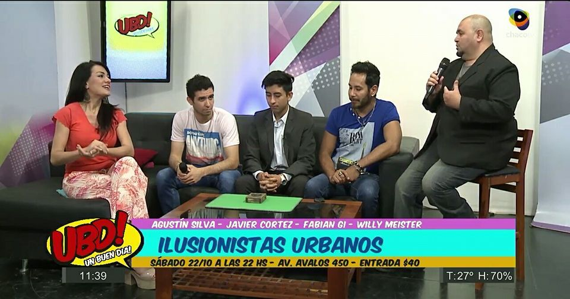
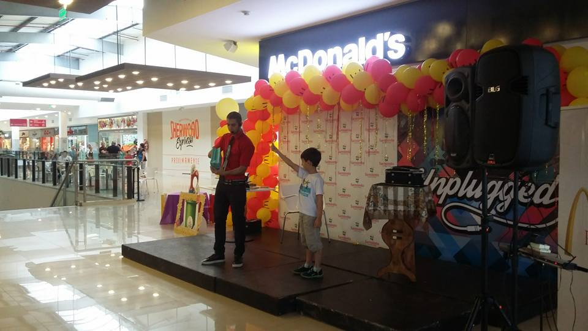

La magia conecto conmigo desde muy pequeño, a los 7 años un amigo me muestra un truco, que habia aprendido de una cajita de magia que le regalaron los padres. Desde ese dia siempre tuve mucha curiosidad por conocer los trucos de los magos, lamentablemente en el pueblo donde vivia no habia acceso a aprender magia, solo debia conformarme con ver los programas de magia en la TV o descubrir los trucos viendo al mago enmascarado, Ya un poco mas grande, con 15 años, con acceso a internet, me pongo a invetigar sobre la magia y encuentro videos sueltos de youtube de algunas personas que revelaban los secretos (en ese momento habia muy poca informacion). Yo pensaba que habia iniciado mi carrera en el mundo de la ilusion, pero el sueño se frustro cuando con muy poca practica y cero conocimiento en la teoria, presente los trucos ante mis compañeros de curso y no sorprendi a nadie, es mas se dieron cuenta de los trucos y hasta se burlaron. En ese momento pense que la magia no era mio y decidi dejar de intentarlo. 2 años mas tarde descubro un libro en internet que prometia enseñarme a ser un mago de verdad, que transmita y exprese la magia mas alla del truco. Este libro reavivo mi sueño de ser mago y a partir de ahi mi vida giro en torno a este arte. Estuve mucho tiempo encerrado practicando pero con miedo a que al presentar los trucos, fracase nuevamente. En busca de auxilio, ese momento a travez de facebook pedi consejos a otro mago con experiencia, y me dijo una frase que me marco: ''Si te equivocas es porque estas haciendo, Los que no hacen nada nunca tienen errores Pero tampoco tienen aplausos''. Despues de eso me anime a presentarme por primera vez en un show que organizo mi escuela, y la verdad que fue un desastre mi presentacion, pero fue una victoria personal para mi, porque lo habia hecho, habia superado la barrera del miedo que me frenaba y me dio el impulso que necesitaba para mejorar y hacerlo mejor la proxima vez.